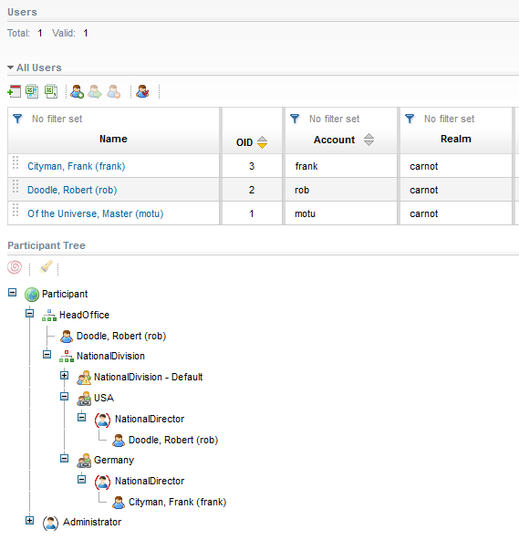
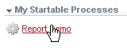
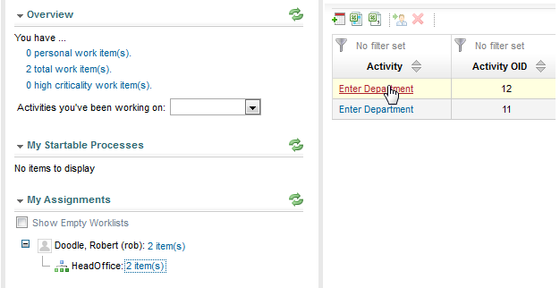
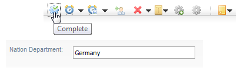
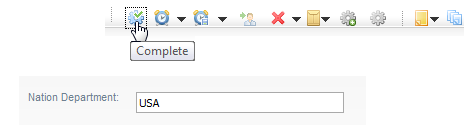
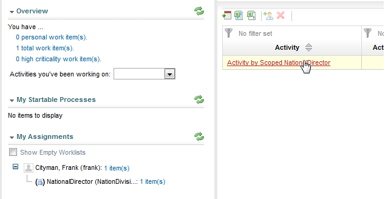

This chapter describes how to create users and departments and associate the users with the different departments to prepare the viewing of the results in the Reporting Templates.
Start your server and deploy the model to be able to test the scenario in the Stardust Portal. For information on how to deploy a model in a dynamic Web project, please refer to the chapter Deploying a Workflow Model of the Support Case Example tutorial.Then continue with the following steps:
Login with the default motu/motu password and switch to the Participant Management View of the Administration Perspective.
Create two users, e.g. Robert Doodle and Frank Cityman, as described in the section Creating a new User of chapter Creating and Editing User Accounts in the Stardust Portal documentation.
Now switch to the Participant Management view to create the departments. For the NationalDivision organization, create the departments USA and Germany. Please refer to the section Creating a Department of chapter Creating and Editing User Accounts for detailed information on how to create departments.
Now assign the newly created users to the according departments in the following way:
Please refer to section Associating the user with an Organization of the chapter Creating and Editing User Accounts for detailed information on how to associate users with roles or organizations in departments.
Now the participant tree should look like in the following screenshot:

Figure: Departments and Users in the Participant Tree
Switch to the Workflow Execution Perspective. In the My Startable Processes section, trigger the Report Demo process two times, by clicking its entry two times.

Figure: Triggering the Report Demo Process
Now log in as user Doodle, Robert. This user is assigned to the organization HeadOffice and the role NationalDirector in the department USA. Thus he first has two entries in the worklist of the HeadOffice organization.

Figure: HeadOffice Worklist
Start the first activity in the worklist and enter Germany as value for the department.

Figure: Enter Department Germany
This activity is completed and the subsequent activity Activity by Scoped NationalDirector goes to the worklist of the user Cityman, Frank with the role NationalDirector in the department Germany.
Start the second activity and enter USA as value for the department.

Figure: Enter Department USA
As the logged in user Doodle, Robert is assigned to department USA, the activity Activity by Scoped NationalDirector is now opened in the users worklist. Complete this activity.
Log out and log in again as user Cityman, Frank. In the worklist of My Assignments, click the item for the NationalDirector role in the department Germany. In the displayed worklist view, activate the Activity by Scoped NationalDirector activity.

Figure: Start the Activity Item
Complete this activity.